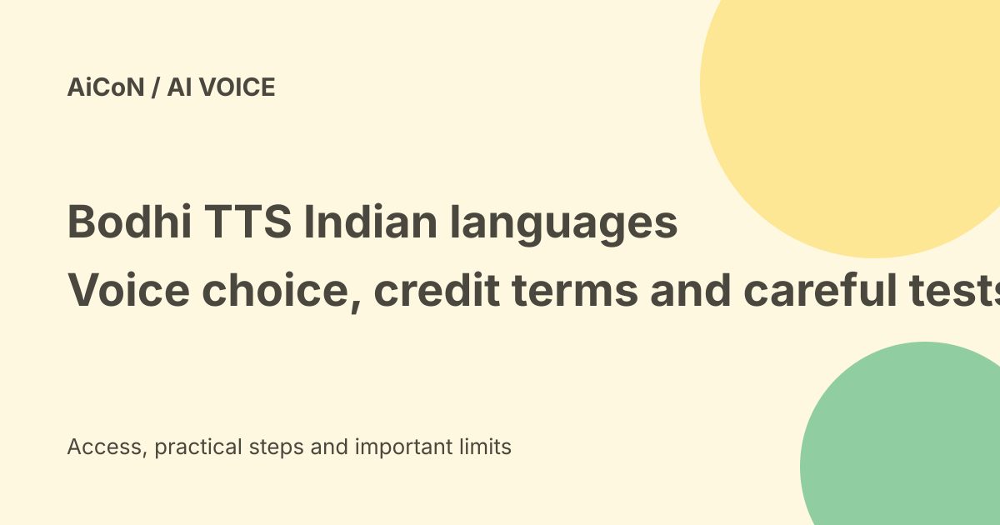

Bodhi TTS: ten synthesis languages, voices and pricing checks
Navana’s current synthesis documentation lists ten languages, including Malayalam, and describes using the same voice identity across them. The older Bodhi Speech API page mainly describes speech recognition. This guide uses the synthesis docs for speech generation and does not treat an old launch price as a verified current bill.

What is text-to-speech?
Text-to-speech turns written text into generated audio. Speech-to-text does the opposite: it turns recorded speech into a transcript.
Bodhi offers both on its newer API platform. A language count or benchmark for transcription does not automatically describe synthesis.
The ten documented synthesis languages
The current voices page lists Bengali, English, Gujarati, Hindi, Kannada, Malayalam, Marathi, Odia, Tamil and Telugu.
The synthesis language values are short codes such as ml for Malayalam and hi for Hindi. The docs warn that transcription uses a different naming scheme. Do not copy a transcription model name into a synthesis language field.
One voice identity across languages
The documentation says a named voice can speak all ten languages. The request combines the voice ID with the target language rather than using a separate language-specific voice name.
This is useful for a multilingual product that wants a consistent speaker identity. It is still worth checking each language's pronunciation and naturalness with native listeners.
Voice choice and defaults
The current page lists named voices and says the voice field is optional. If omitted, the request uses the default female voice for the chosen language.
The marketing platform describes more than fifty voices. A large catalogue is not evidence that every voice fits a particular brand, age group or sensitive service.
Price and free-versus-paid verdict
The platform documentation describes one API key, credits metered per use and no minimum plan. That does not mean unlimited free generation.
The original post quoted twelve rupees per ten thousand characters and one thousand rupees in starter credits. Those exact current terms were not re-established on the checked official public pages or the unauthenticated platform login. Confirm the dashboard's current rate, trial expiry, taxes and usage units before budgeting.
Do not convert characters to minutes blindly
A character-priced rate and an audio-minute rate measure different things. Reading speed, language, punctuation and text content can change audio duration.
Any comparison with another provider should use the same text, voice quality, latency target and billing conditions. The earlier competitor comparisons were vendor claims, not a fresh like-for-like test here.
Latency claims need a real workload
The public product page describes low-latency speech generation. Launch reporting gives stronger speed figures, but this guide did not run a synthesis request.
Measure first-audio delay, total generation time and playback reliability from your own Indian deployment. A lab or vendor number is not a guarantee across every network and text length.
Pronunciation and business text
The platform describes controls for pronunciation of names, brands and domain-specific terms. Test examples such as dates, amounts, abbreviations and mixed-language sentences rather than trusting a general demo.
Review the complete audio before it reaches customers. A correctly written amount can still be spoken confusingly.
Voice cloning needs permission
Navana's platform advertises voice-cloning capability. Do not use a person's recording to imitate them without clear permission for that purpose.
Permission to record an interview is not automatically permission to create a reusable synthetic voice. Check allowed uses, disclosure, storage and deletion.
Privacy and deployment questions
Texts sent for synthesis may include customer names, phone numbers, health information or private financial details. Use approved sample text first and inspect retention, provider access and security terms.
A security-compliance claim on a marketing page is not a guarantee that a particular deployment meets your organisation's requirements. Confirm any private deployment and associated price in writing.
A careful start
- Use the official API platform and synthesis documentation.
- Check current account access and credit terms.
- Choose the synthesis language and voice separately.
- Use non-sensitive text for an initial test.
- Review pronunciation with a native listener.
- Measure latency and consumption.
- Check consent for any cloned voice.
- Confirm data and cost terms before production.
No signup, key creation, voice upload or paid API call was performed for this guide.
What changed since the original post?
We separate ten-language TTS documentation from the older twelve-language speech-recognition page. Exact launch pricing, credits and speed comparisons stay unverified as current terms rather than being repeated as promises.
Frequently asked questions
Does it document Malayalam synthesis?
Yes, Malayalam is in the current synthesis language list.
Is the same voice available across languages?
The documentation says the same named voice identity works across all ten.
Is the quoted launch price verified today?
No. Check the current dashboard and billing terms.
Sources: Current Navana API platform · Current synthesis voices and languages · API platform documentation and metered credits · Official platform: login required for account terms · Older speech API page: mainly recognition. Checked 7 October 2026.